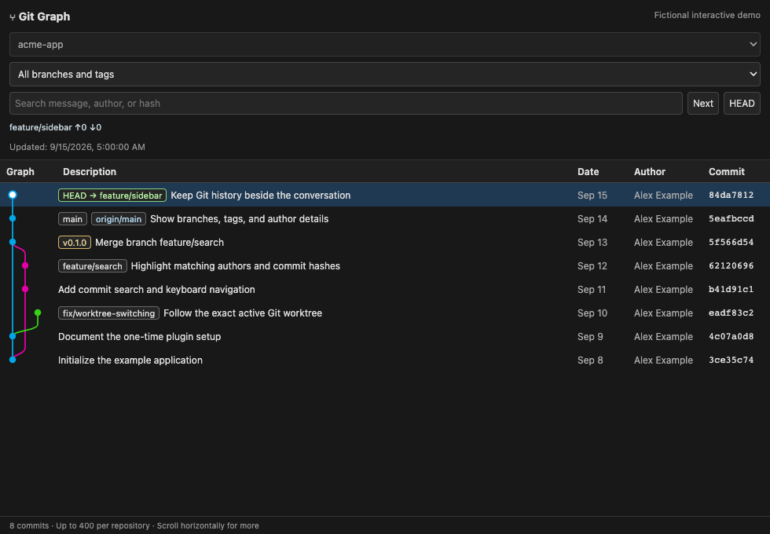

Your Git history.
Beside your work.
Branches, merges, and commit details in Orca’s right sidebar. Switch projects on the left. Your graph follows.
Python + Git. No cloud service. No Node.js. MIT licensed.

Follows your workspace
Track the exact local worktree, branch, and detached HEAD selected in Orca. No manual repository switching.
Read the whole story
Follow colored branch lanes, filter by a reference, search commits, and inspect messages and changed files.
Stays on your machine
Read-only Git commands. No repository uploads, telemetry, public server, or automatic fetches.
Install once. Keep your graph nearby.
You need Git, Python 3.9+, and Orca desktop. The initial desktop target is Orca 1.4.185 on macOS. Windows and Linux desktop integration is experimental.
Run in an Orca terminal:
git clone https://github.com/pty0220/orca-git-graph.git
cd orca-git-graph
python3 install.py- Open Settings → Plugins and enable the plugin system.
- Expand Development → Add path. Paste the absolute runtime plugin path printed by the installer.
- Choose Installed → Git Graph → Review and enable.
- Click the layers icon, “Git Graph,” in the right sidebar.
The installer attempts to open a Git Graph Sync terminal. If it cannot, run:
python3 ~/.local/share/orca-git-graph/run.py watchKeep the sync terminal open. Restart it after quitting Orca. Development registration is required for live updates; the generic Git URL installer only loads a static placeholder.
Full installation, profiles, updates, and uninstall →For people. And their coding assistants.
Also available: Markdown overview · Full documentation text · Contributor instructions for coding agents.
Before you install
Is this the VS Code Git Graph extension?
No. This is an independent community implementation for the Orca desktop IDE. It is not affiliated with Orca or the VS Code extension.
Does it modify my repository?
No. It reads local history and reference metadata. It does not check out branches, commit, fetch, push, or upload repository data.
Does it work with remote workspaces?
This release supports local repositories. SSH, cloud, and remote workspaces show an explanatory message. The default history window is 400 commits.
Why does a terminal need to stay open?
Orca's sandboxed plugin panel cannot read Git directly. A small local Python process generates its HTML when your workspace or history changes. No operating-system startup service is installed.
Will it work with every Orca version?
The desktop integration was validated on Orca 1.4.185 for macOS. The plugin API and local state format are experimental and may need updates for later Orca releases.